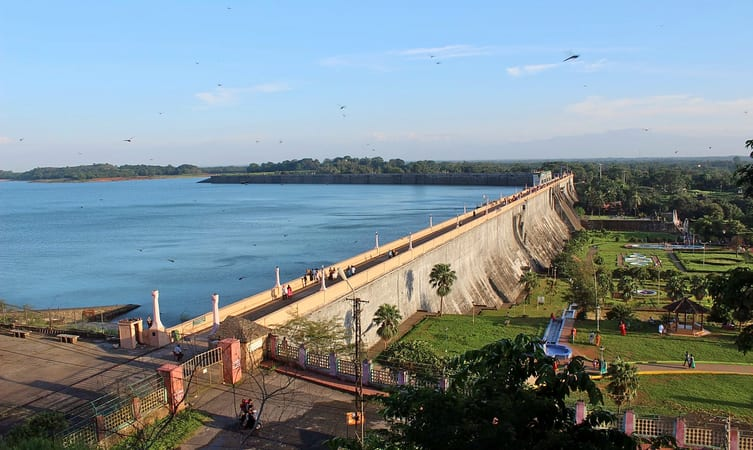

01.Parambikulam Wildlife Sanctuary

Spread over an area of nearly 400 square meters, the wildlife sanctuary is one of the most famous Palakkad tourist places for its Wild Tiger Reserve.
Wildlife enthusiasts and thrill seekers will find it perfect to spend a day among the plethora of flora and fauna of the sanctuary along with the large population of royal Bengal tigers housed here. Set against the backdrop of Anaimalai Hills and Nelliampathy Hills, the sanctuary is a heaven for nature lovers.
Distance: 14.7km from Palakkad bus stand.
Timings: 7 AM to 4 PM
Entry Fees: INR 50 for light vehicle, INR 150 for the heavy vehicle.
02.Palakkad Fort

One of the most historically important Palakkad tourist places is the Palakkad fort or Tipu’s fort. Spend a day celebrating picnic in the sprawling green grounds of the fort with your family and enjoy looking at the various statues in the complex.
Or go for a morning or evening jog on the running track running along the moat surrounding the fort. History aficionados can spend a few hours enjoying the museum located within the grounds admiring the renovation of the fort by Archaeological Survey of India.
Distance: 1.8km from Palakkad bus stand
Timings: 8 AM to 6 PM
Entry Fees: No entry fee.
03.Malampuzha Dam

Located at the foothills of the majestic Western Ghats, the Malampuzha Dam is the largest reservoir in Kerala located near Palakkad. It is the perfect place to spend a day with your family walking around in the lush green gardens around and soaking in the untouched natural beauty of the place.
The dam is a towering 2249 meters high and the backdrop of rocky-mountains with null vegetation rising above and behind make for an awe-inspiring sight. The amusement park around the dam will keep your kids occupied while you enjoy the raw beauty of the place around.
Distance: 9.6km from Palakkad bus stand.
Entry Fees: None.
Timings:9 AM to 8 PM